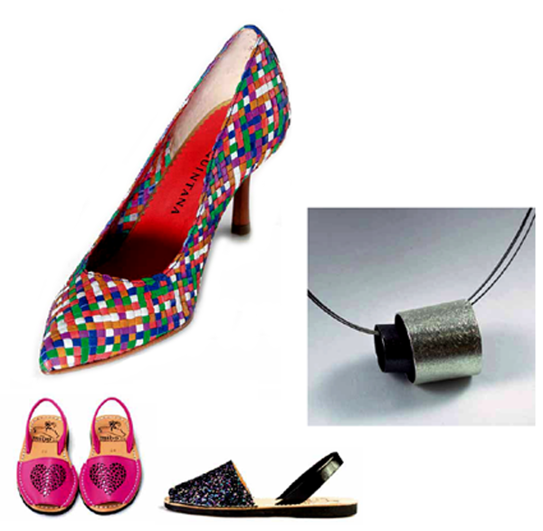

De compras, todo a su alcance
Si uno pudiera, de Menorca se lo llevaría todo. Volver a casa con todo lo que ofrece esta Isla es imposible. Sin embargo, si lo que quiere es irse de compras, cuenta usted con grandísimas oportunidades. Aunque la isla parezca pequeña, le ofrece una gran variedad de comercios y tiendas en las que encontrar aquello que usted estaba buscando.
En los centros de todos los pueblos y ciudades existen multitud de comercios en los que buscar y encontrar sus objetos de deseo. Especialmente en Ciutadella y Maó, que por sus mayores dimensiones, ofrecen al visitante el placer de comprar mientras pasea por entornos privilegiados.
Uno de los productos que usted no puede dejar pasar si visita Menorca es el calzado. Aquí se fabrican zapatos que son referencia en el mundo entero. Sus sellos de identidad son la calidad y el diseño, y están a su alcance. No olvide tampoco las avarques, el calzado más menorquín de todos los que existen. Le sorprenderá la gran variedad de modelos que se fabrican y su versatilidad. En la Isla también encontrará excelentes tiendas textiles. Podrá escoger entre productos cien por cien menorquines o la moda más internacional, entre las prendas más básicas o los complementos más exquisitos.
Y si lo que busca es artesanía o productos agroalimentarios, Menorca es su centro comercial ideal. No se vaya sin hacerse con un vino, un queso o un embutido típico de la Isla. Los encontrará con facilidad, y así podrá llevarse a su tierra en trocito de Menorca para que su paladar lo recuerde siempre.
Piérdase por los comercios de Menorca. Encontrará lo que busca.